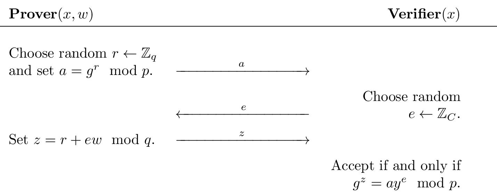

ZKPs
Zero-knowledge proofs (ZKPs) are a technique that enable one party (the prover) to demonstrate to another party (the verifier) the truth of a certain statement without revealing any additional information besides the fact that the statement is true. The foundation for ZKPs was laid in 1985 by Goldwasser, Micali, Rackoff, Babai, and Moran, who won the first Gödel Prize for their contribution to theoretical computer science.
ZKPs are an active field of research, and have many practical applications, including authentication systems, verified computing, and privacy-preserving blockchains.
Sigma Protocol
Toggle-
ZKP Introduction5 pts · 1424 SolvesA zero-knowledge proof (ZKP) is a technique that enables one party (the prover) to demonstrate to another party (the verifier) the truth of a certain statement without revealing any additional information besides the fact that the statement is true. The core idea behind zero-knowledge proofs is that while it's straightforward to prove you have certain knowledge by disclosing it, the real challenge lies in proving you have that knowledge without actually revealing the knowledge itself or any details about it.
Properties
At a high-level, effective zero-knowledge proof algorithms embody three critical properties, "Completeness", "Soundness", and "Zero-Knowledge", which we will be exploring in detail over the following challenges.
Interactions
In a basic setting, meaningful zero-knowledge proofs require some form of interaction between the prover and the verifier. Typically, this interaction involves the verifier asking the prover one or more random questions. The randomness of these questions, coupled with the prover's correct responses, convinces the verifier of the prover's knowledge. Without this interaction, a verifier could potentially share the proof with a third party, falsely implying that they also possess the secret knowledge.
In specific models it's possible to have non-interactive zero-knowledge proofs thanks to the Fiat–Shamir heuristic, which we'll look at later.
Example
An example which is often used to intuitively understand the principle of zero-knowledge proof:
You need to prove to your color-blind friend Victor that two identically shaped balls—one red, one green—are distinct without revealing which is which, you use a specific proof system. You show him the balls, and he, unable to distinguish their colors, tests you. Victor hides the balls, shows one, and either switches it or not before showing one again. You must identify if he switched the ball. Repeating this process enough times (e.g., 50 times), and since you can reliably identify switches due to seeing colors, Victor becomes convinced the balls are different without learning which is red or green. This demonstration doesn't reveal any additional information, and so, is an example of a zero-knowledge proof.
Flag
The flag iscrypto{...}with...completed with the year that Goldwasser et al published "The Knowledge Complexity of Interactive Proof Systems".
Challenge contributed by Ectario
Proofs of Knowledge20 pts · 751 Solves · 8 SolutionsZero knowledge proofs are a tool in modern cryptography which allows you to prove that you know some witness which satisfies a relation, without revealing what the witness is. This has applications everywhere from signature schemes and privacy preserving cryptocurrencies, to one of the building blocks of secure multiparty computation.
For this first set of challenges, we are going to be looking at a protocol for proving knowledge of a discrete logarithm. The Prover (P) wants to prove to the Verifier (V) that she knows some witness $w$ such that $ g^{w} =y \mod p$ where $g$ generates a group $\Fp^*$ where computing the Discrete Logarithm (DLOG) is hard.
More generally, we talk about a proving knowledge of the public information (the "statement") and the witness satisfying some relation, for example, for the DLOG relation $R_{\text{dlog}}$. We have statement $(p,q,g,y)$ defining a subgroup of $\Fp^{*}$ generated by $g$ of order $q$, where $p,q$ are prime, and $y$ is an element of the subgroup. The "Witness" $w$ is then the discrete logarithm of $y$ with respect to $g$, which we denote as tuple $((p,q,g,y),w) \in R_{\text{dlog}}$
We start with a simple interactive protocol by Schnorr to prove knowledge of a discrete logarithm for public parameters $x=(p,q,g,y)$ and private input $w$ where $g^{w}=y \mod p$.
Note that $z$ is computed modulo $q$. This is because these operations are happening in the "exponent" of the verification equation, where the group generated by $g$ has order $q$.
Note the three message form of this protocol:- P sends some message $a$ to V
- V sends a random $t$-bit string to P (the challenge)
- P sends some message $z$ to V. V now decides to accept or reject $(\top,\bot)$ based on $(x,a,e,z)$
This is an instance of a so-called Sigma protocol, often denoted $\Sigma$-Protocol. A type of zero-knowledge proof with many nice properties.
To show that something of this structure is a $\Sigma$-Protocol, there are three additional properties the protocol has to satisfy, which we will now introduce over the next three challenges:- Completeness: if P,V run the protocol on public input $x$ and private input $w$, where $(x,w) \in R$, then V returns $\top$.
- Special Soundness: "If P can convince V, then P knows $w$"
- SHVZK: "V doesn't learn anything about $w$ from P"
We will discuss Special Soundness and SHVZK (Special-Honest-Verifier-Zero-Knowledge) more in following challenges. For now, lets start with Completeness!
The aim of this challenge series is to give a first introduction to the key concepts of modern zero knowledge protocols. For those wishing to see a more formal treatment, I recommend resources such as the $\Sigma$-Protocols lecture notes by Damgård on which served as the inspiration for some of these challenges.
Can you implement P's side of the protocol, and prove to the server that you know a witness $w$ that satisfies the relation $y = g^{w} \mod P$, making it returnaccept?
Note: The next few challenges in this set aren't built to be difficult "CTF" challenges, but rather built to give you an intuition for how we construct and prove the security of Zero Knowledge protocols. For people interested in learning, it's recommended for your solve scripts to try and follow the protocol/challenge suggestions in your solve scripts as well. (For example, making sure to sample $r$ randomly each time rather than fixing it, etc.)
Connect atsocket.cryptohack.org 13425
Challenge files:
- 13425.py
Challenge contributed by killerdog
Special Soundness25 pts · 678 Solves · 8 SolutionsThe last challenge showed that this protocol satisfies (perfect) completeness! That is, if a prover and verifier follow the protocol on valid inputs, and the prover knows the real witness, the verifier will always accept.
The second property a protocol must have to be a $\Sigma$-Protocol is Special Soundness. We will call the messages sent between P and V, $(a,e,z)$, a "transcript".
Special soundness is defined (roughly) as follows: Given any two accepting transcripts $(a,e,z)$ and $(a,e',z')$ proving the same relation, where $e \neq e'$, you can efficiently compute a witness for this relation.
For our current protocol, this means that for a given $P,q,g,y$ and accepting transcripts $(a,e,z)$ and $(a,e',z')$ where $e \neq e'$, we can efficiently compute a witness $w$ such that $g^w = y \mod P$.
This doesn't require that the $w$ computed is the same one that the Prover was using. While in our current case $w$ is unique, so it must be the same, there exist other classes of relations where there are many valid witnesses. And computing any valid witness is enough for special soundness.
This property is very powerful, and is the essence of what we mean when we talk about "proving knowledge" of something.
Imagine a Prover has sent an $a$ to the Verifier, and receives a random challenge $e$ back, the Prover now has to produce a $z$ such that the verifier accepts the transcript.
If the prover can do this, then either the Prover was only able to complete the transcript for one specific $e$, (in which case he got $1/2^t$ lucky, and his probability of convincing the verifier is negligible in the security parameter.) Or the Prover was able to complete the transcript for more than one $e$ challenge.
However, being able to complete a transcript for more than one $e$ challenge is equivalent to being able to produce at least two accepting transcripts locally, which is equivalent to computing the witness.
So any Prover who can convince the verifier he knows $w$ with non negligible probability knows $w$, (or is able to efficiently compute it, which we treat as equivalent.)
You can see special soundness as saying "if the prover can produce a $z$ which the verifier accepts for at least two challenges after committing to an $a$, then $w$, or information to compute $w$, is somewhere in his head."
For this challenge, you are the verifier, and the prover will accidentally reuse the same $a$ over two runs. Show that this lets you extract $w$ from her!
Look at the relation between $z, e, z', e'$ and $r$
Connect atsocket.cryptohack.org 13426
Challenge files:
- 13426.py
Challenge contributed by killerdog
Honest Verifier Zero Knowledge30 pts · 609 Solves · 6 SolutionsThe previous challenge showed that this protocol satisfies Special Soundness!
That is, if P can convince V that he knows $w$ with non-negligible probability, then we are able to efficiently "extract" $w$ from P, which shows that $w$ (or material to efficiently compute the $w$) "exists" somewhere inside the prover.
Special Soundness vs Soundness: Soundness is the property that a prover who doesn't know the witness cannot convince the verifier to accept with probability higher than 1/challenge space. Special soundness is a stronger property used when discussing $\Sigma$-Protocols and directly implies soundness, (can you see why?) but also provides many other nice properties for $\Sigma$-Protocols like witness extraction, some of which we will use later.
The final property is (Special-)Honest-Verifier-Zero-Knowledge. This is a bit of a mouthful, so lets break it down.
Honest Verifier: This property is specifically looking at the case of a prover interacting with an honest verifier. That is a verifier who will follow the protocol exactly. Specifically this means that $e$ is guaranteed to be a uniformly random $t$-bit bitstring, and independent of all other values in the protocol.
Zero Knowledge: This property means that the Verifier learns "nothing" about the witness. The way we prove this is by showing that there exists an efficient simulator S, who on input $S(x,e)$, can produce a satisfying transcript $(a,e,z)$ which is indistinguishable from a transcript of a real interaction between a Prover and a Verifier.
In our specific case this means, $S((p,q,g,y), e)$ -> $(a,e,z)$ where $(a,e,z)$ is an accepting transcript proving knowledge of some witness $w$ such that $y = g^w \mod p$.
The word indistinguishable here is important. In formal proofs you need to show that the distributions of each message in the transcript generated by the simulator are (computationally/statistically) indistinguishable from message produced in the real protocol between an honest prover/verifier.
Special: In SHVZK the simulator takes $(\texttt{parameters},e)$ and produces $(a,e,z)$ whereas in HVZK the simulator is allowed to choose $e$ itself. There are efficient generic transformations which make an HVZK protocol into a SHVZK protocol, so the difference isn't important here.
Note that the simulator never received $w$ as an input, so it doesn't know the witness. And it has to be efficient, so (assuming the discrete logarithm problem is hard) it can't efficiently compute $w$ either.
The trick here is that the simulator is allowed to select its $a$ value after seeing the challenge, allowing it to then sample a uniformly random $z \in \Fq^*$, and then compute an $a$ such that $(a,e,z)$ satisfies the verifiers checks!
Note the following observations:- If there exists Simulator which can efficiently produce a satisfying transcript $(a,e,z)$ from only public data, then it follows that a verifier having access to an accepting $(a,e,z)$ should give it no advantage in computing the witness $w$. This is because the Verifier can just create arbitrary many accepting $(a,e,z)$ transcripts itself by just running the Simulator locally.
- The only difference in the real protocol is that the verifier generates challenge $e$ after seeing $a$. However, since an honest verifier is sampling $e$ uniformly at random, it can't actually influence the protocol in any way as a result of having seen $a$ before it chose $e$. Indeed the $e$ value could just as well have been randomly sampled by and sent from the Prover!
- Due to (2), the fact that the verifier sees $a$ first, then sees $e$, then $z$, should give it no advantage in learning $w$ compared to just having seen the complete transcript at the end. And by (1), seeing the complete transcript doesn't teach it anything about $w$, since it could have computed any number equivalent transcripts locally without even talking to the Prover.
This shows that for an Honest verifier, if there exists such a simulator, then from completing the protocol with P the verifier doesn't learn anything extra that it couldn't have efficiently computed locally, other than the fact that P knows $w$.
This technique gives the simulator "more power" than the Prover would have in the real world. However, it does not create a gap between what the Verifier is able to learn from P in the Simulator world and the real world. This is a very common technique for proving that a protocol is zero knowledge. In this case it's allowing the simulator to select $a,z$ out of order, but other protocols might use things like programmable random oracles, a trapdoored common reference string or some other simulator "advantage" to allow simulation or extraction.
For this challenge, you'll construct such a simulator :)
Note: hint: Start by generating a uniformly random $z$ (this is required for the indistinguishability property mentioned above), then look at what the verifier actually checks, to work out how to compute an $a$ such that $(a,e,z)$ is an accepting transcript.
Connect atsocket.cryptohack.org 13427
Challenge files:
- 13427.py
Challenge contributed by killerdog
Non-Interactive35 pts · 565 Solves · 6 SolutionsWe have now shown that the Schnorr protocol for proving knowledge of a discrete logarithm relation is a $\Sigma$-Protocol! We did this by showing that it has the correct 3 move pattern, and satisfies the properties of Completeness, Special Soundness and SHVZK (Special Honest-Verifier Zero-Knowledge.)
While this took a little bit of work to prove, being a $\Sigma$-Protocol carries many nice advantages. For example, in this challenge we will explore how any $\Sigma$-Protocol can be made into a non-interaction zero knowledge proof (NIZK) essentially for free, using a generic transformation, first formalised by Fiat and Shamir!
Recall how SHVZK noted that for the honest verifier case, the only input the verifier has to the protocol is to supply a uniformly random $t$-bit string, after the prover has committed to an $a$ value.
It follows that the receiver doesn't necessarily need to sample this randomness itself, as long as it is uniformly randomly sampledafter the prover has committed to his $a$ value. Luckily we have a primitive in cryptography which takes an input, and returns a (supposedly) uniformly random value based on that input: a hash function!
The observation of Fiat and Shamir was that we can replace the random value from the prover by the output of a hash function run on the first message of the protocol, and get the same security properties.
Note that this does allows the Prover to re-sample many $e$ values very quickly by just brute forcing $a$ values locally. However from the Special Soundness and SHVZK we know that for a given $a$, a Prover who does not know the witness $w$ will only be able to answer at most one $e$ with a valid $z$. This means each query to the hash function will have a $1$ in $2^{t}$ probability of leading to a valid transcript $(a, e=\text{hash}(a), z)$, so the chances of a (polynomial in the security parameter) bounded cheating prover forging a proof is negligible.
Note: the exact values put into the hash are very important here. In general you want to hash all the public inputs and first messages, and in more complicated protocols (and in CTFs) it is very common to see vulnerabilities based on Fiat-Shamir transforms where not the entire input was hashed, letting malicious provers modify parts of their initial message/public input data after computing $e$, and forging proofs in this way.
Unnecessary theory for those interested: The notion of a "Proof of Knowledge" (as formalised by Bellare and Goldreich in '92) is as follows: If there exists an extractor, which given black box access to an efficient Prover P, can efficiently extract a witness $w$, then P "knows" $w$.
For a special-sound sigma protocol, the following is an extractor (E) which can recover $w$ given black-box rewinding access to P:- E receives $a$ from P, sends some random $e$, and receives $z$
- E then rewinds P back to it's state just after it sent $a$
- E then resamples a random $e'$ and sends that to P, and receives a $z'$ from P.
- E now has two satisfying transcripts $(a,e,z)$,$(a,e',z')$ where $e \neq e'$, so by special soundness can recover $w$
This rewinding technique is a standard way of showing that for some well defined prover, simply being able to rewind it to an earlier state is enough for it to leak $w$.
For Fiat Shamir, you may notice this extractor no longer works if $e=H(a)$ is always the same. This is where cryptographers model hash functions as something called a Random Oracle (RO). RO's are an idealised version of a hash function, which upon receiving an input for the first time returns a uniformly random value, and notes down what it returned. If it receives the same message again it returns the same value as previously.
Fiat-Shamir NIZK's are typically proved secure in the Programmable Random Oracle model, where we give the extractor the ability to see queries to the RO and control the initial output of the RO. The extractor then observes when P calls RO($a$), makes it return one random value, rewinds P and the RO back to before the query, and makes the RO return a different random value the second time.
These transformations (and their limitations) are generally assumed knowledge within the research community, and one of the strengths of constructions like $\Sigma$-Protocols is that showing your protocol is one is enough to let you handwave away the "nizk-ification" as "using Fiat Shamir in the RO model we get...". But for those interested in a formal treatment, see fx. this result from Eurocrypt '22
What is especially cool about this transformation (beside it making the protocol fully non interactive) is that it also removes all of the verifiers inputs from the protocol. This means that there is nothing a malicious verifier can actually do to try and break the protocol/diverge from what an honest verifier would do. So the fact that the sigma protocol is Honest Verifier Zero Knowledge, means this generic Fiat-Shamir transform also makes the protocol Zero-Knowledge even against malicious adversaries.
This has made this protocol a provably secure, efficient way of securely and non interactively proving knowledge of a secret DLOG relation, against potentially malicious verifiers.
In this challenge you'll construct a Fiat-Shamir NIZK proving knowledge of the DLOG relation.
Connect atsocket.cryptohack.org 13428
Challenge files:
- 13428.py
Challenge contributed by killerdog
Too Honest50 pts · 522 Solves · 7 SolutionsRecall that we only proved Schnorr's protocol to be SHVZK, and while this was enough to make maliciously secure NIZK's, this leaves the question of "what could happen if V isn't honest?"
This challenge is an implementation of Girault's identification protocol for proving knowledge of a witness for a DLOG relation, but modulo some composite $N$ instead of a prime.
You are the verifier, and the prover will show that they know the flag using an interactive $\Sigma$-Protocol. Extract the flag by selecting a malicious $e$.
Note that proving something to be a $\Sigma$-Protocol only makes it secure against an "honest" verifier. If we want to use a protocol in a setting where the verifier can't be trusted to be honest, you can either make the proof non-interactive, or convert the SHVZK protocol into a maliciously secure ZK protocol, (there exist generic transformations which generally add another round of interaction.)
Connect atsocket.cryptohack.org 13429
Challenge files:
- 13429.py
Challenge contributed by oberon
OR Proof75 pts · 398 Solves · 4 SolutionsWe have already seen how proving a protocol to be a $\Sigma$-Protocol essentially gives us a NIZK transformation for free. But it also opens up a wide range of results, constructions and tools from literature which allow us to easily compose simpler $\Sigma$-Protocols, using them as the building blocks for much more complicated functionalities.
One of these basic constructions is the OR-proof. That is, given two $\Sigma$-Protocols $\Sigma_{1}$ and $\Sigma_{2}$, there is a generic transform which will give us a new $\Sigma$-Protocol $\Sigma_{3}$ which is the OR of $\Sigma_{1}$ and $\Sigma_{2}$.
Let prover P be given inputs $x_{0},x_{1},w$, where $w$ is a witness such that either $(x_{0},w) \in R$ or $(x_{1},w) \in R$. The $\Sigma_{OR}$ protocol will allow P to prove he knows a witness to one of these cases, without revealing which he knows the witness to.
This is a very useful primitive for building more advanced protocols, allowing you to compose the OR of knowledge of a witness for arbitrary many relations together into one protocol.
The protocol is as follows, for public inputs $(x_{0}, x_{1})$ where P has a witness for $x_{b}$:- For protocol $(1-b)$, P samples a random $e_{1-b}$, then runs the simulator from $\Sigma_{1-b}$ to get accepting transcript $(a_{1-b},e_{1-b},z_{1-b})$
- For Protocol $b$, P computes $a_{b}$ honestly
- P sends $(a_{0}, a_{1})$ to V
- V sends random challenge $s$ to P
- P sets $e_{b} = s \oplus e_{1-b}$
- P uses $(a_{b},e_{b},w_{b})$ to honestly compute $z_{b}$, getting accepting transcript $a_{b},e_{b},z_{b}$
- P sends $t_{0}=(a_{0},e_{0},z_{0}),t_{1}=(a_{1},e_{1},z_{1})$ to V
- V accepts if $e_{0} \oplus e_{1} = s$, and both transcripts $t_{0}$ and $t_{1}$ are accepting w.r.t the relevant public parameters.
The intuition behind this protocol is as follows. We know from SHVZK that if we get to choose $e$ before $a$, then we can forge a transcript which is indistinguishable from a real accepting transcript. In the OR protocol, the prover is essentially providing a valid transcript for both $\Sigma_{0}$ and $\Sigma_{1}$, where the $e$ values have to $xor$ to the verifiers challenge. This lets the prover select exactly one of the $e$ values itself. For the branch it does not have a witness for it uses its SHVZK simulator with this selected $e$, creating a full transcript locally and sending the $a$ for that transcript, and then honestly creates the other transcript running the real protocol against the verifier, with the xor of it's simulated $e$ and the verifiers challenge as the honest protocol challenge.
The basic idea is P simulates the half of the protocol he has no witness for, by picking that challenge. This results in the $s$ received from the verifier uniquely determining the challenge for the other protocol, but he knows the witness for that half so he can complete the remaining half honestly.
In this challenge you will show that the OR proof is a $\Sigma$-Protocol, by going through completeness, extracting a witness to show special-soundness and simulating a transcript to show SHVZK.
This challenge is hosted on the CTF archive. Find the corresponding challenge in that category, solve it, then enter the flag here.
Challenge contributed by killerdog
Hamiltonicity 1100 pts · 281 Solves · 3 SolutionsSo far we've only been looking at $\Sigma$-Protocols with one round, where there is a large enough challenge space that the probability of randomly sampling a specific $e$ is negligible in the security parameter. While this works well for $\Sigma$-Protocols like Schnorrs, there are other classes of relations we wish to prove witnesses of where this pattern isn't so convenient.
In this challenge we are going to look at an example of a $\Sigma$-Protocol which uses a one bit challenge, giving the Prover a 50% chance of "guessing" the challenge correctly. While this gives a Soundness error of $1/2$, we can then repeat the protocol $t$ number of times, to bootstrap this soundness error to $2^{-t}$ until it is negligible in the security parameter.
These types of protocols are generally based around making the prover commit to some information, then being asked to do one of two actions based on what he committed to, where a prover who can answer both challenges must know the witness. While the previous $\Sigma$-Protocols we looked at were only easily realisable for problems with certain types of structure, this new technique lets us start doing zero knowledge for a huge range of types of relations.
The $\Sigma$-Protocol we are going to look at now is a $\Sigma$-Protocol for proving that a given graph includes a Hamiltonian cycle. A Hamiltonian cycle is a path through a graph which visits each node exactly once, ending at the same node which it started at.
The reason this specific protocol is interesting is because the problem of finding if a graph has a Hamiltonian cycle is part of a class of decision problems called NP-Complete. To handwave some complexity theory, this implies that any problem in NP can be embedded into an instance of the Hamiltonian cycle problem.
This is a very important result, because it means that if we have a $\Sigma$-Protocol for proving knowledge of a Hamiltonian cycle in a graph, we by extension have a $\Sigma$-Protocol for ANY relation in NP!
The protocol runs as follows, for Prover P and Verifier V, with public input graph $G$ with $N$ nodes, and private input $w$ being a Hamiltonian cycle in $G$.- P encodes $G$ as a $N \times N$ matrix, where $1$ at index $(i,j)$ signifies that $G$ has an edge going from node $i$ to node $j$, while $0$ signifies no such edge.
- P commits to each entry in $G$ using an information theoretically hiding commitment, we call this $G'$
- P samples a random permutation $\texttt{perm}$ and applies this permutation to each row and column of the$G'$
- P sends $a = G'$ to V
- V samples a challenge random bit $e'$, and sends it to P
- If $e = 1$:
- P computes the cycle in $G'$, denoted $\texttt{cycle}'$ by applying $\texttt{perm}$ to the cycle $w$
- P sets $\texttt{openings}$ to the randomness needed to open only the commitments on this cycle
- P sets $z = (\texttt{cycle}', \texttt{openings})$
- If
e = 0: - P sets $\texttt{openings}$ to the randomness needed to open every entry in $G'$
- P sets $z = (\texttt{perm}, \texttt{openings})$
- P sends $z$ to V
- If $e = 1$:
- V checks that $\texttt{cycle}'$ is a Hamiltonian path in $G'$
- V uses $\texttt{openings}$ to verify that all edges in the cycle are commitments to $1$
- If both satisfy, V returns \top, otherwise \bot
- If $e = 0$:
- V applies $\texttt{perm}$ to $G$ to get $G''$
- V uses $\texttt{openings}$ to open every entry in $G'$
- If $G' = G''$, V returns \top, otherwise \bot
Here is an (informal) argument for why this is a $\Sigma$-Protocol. For a more formal treatment, see Lecture notes by Damgård.- 3 move form: The protocol has the $(a,e,z)$ form, where $e$ is a random (1) bit string
- Correctness: By inspection of the protocol, if P knows $w$ and follows the protocol, an honest V should always accept
- Special Soundness: Given accepting transcripts $(a,0,z),(a,1,z')$: Note $z'$ gives us $w$ which is a Hamiltonian cycle in $G'$, and $z$ gives us the permutation $G -> G'$. We can simply invert the permutation to get a $w'$ which is a Hamiltonian cycle in $G$
- SHVZK: Basic simulator idea is: given $(G,[e_{0}, e_{1}....e_{t}])$
- for $i$ in range($t$)
- Sample random bit $e'$
- if $e' = 0$: commit to a random permutation of G and set this as $a$
- if $e' = 1$: commit to a random graph $G_2$ which you know a Hamiltonian cycle in as $a$
- if $e = e'$, generate a satisfying $z$ (either open to $G$, or open only the cycle you know in $G_2$), $(a,e,z)$ is a satisfying transcript
- Otherwise if $e \neq e'$, rewind to step 1
This challenge is about a Fiat-Shamir'd implementation of this protocol. To get the flag you need to convince the server that you know a Hamiltonian cycle in graph $G$, despite $G$NOT having such a cycle. (Thereby breaking special soundness, and therefore soundness.)
Hint: Look at how the fiat shamir is implemented, something seems fishy...
As this protocol is somewhat complicated, we have included the scriptexample.py, which uses thepwntools process()function to locally run the challenge.
This script will run the Prover side protocol honestly, to give you a starting point. And it will successfully solve the challenge when $G$ is set to a graph which has a Hamiltonian, which the prover knows!
Such a graph has been included in the challenge file, but will only be used by the verifier if the "LocalTest" boolean is set to True, so to locally test out the protocol you can set this to True, and run example.py to get the local flag!
This challenge is hosted on the CTF archive. Find the corresponding challenge in that category, solve it, then enter the flag here.
Challenge contributed by killerdog
Hamiltonicity 2175 pts · 171 Solves · 3 SolutionsIn the last challenge we showed how not to do the Fiat-Shamir transform for a multi-round $\Sigma$-Protocol. This time we've been a little bit more careful and implemented iterated Fiat-Shamir hashing properly.
Can you break it again?
As this protocol is somewhat complicated, we have included the scriptexample.py, which uses thepwntools process()function to locally run the challenge.
This script will run the Prover side protocol honestly, to give you a starting point. And it will successfully solve the challenge when $G$ is set to a graph which has a Hamiltonian cycle, which the prover knows!
Such a graph has been included in the challenge file, but will only be used by the verifier if the "LocalTest" boolean is set to True, so to locally test out the protocol you can set this to True, and run $example.py$ to get the local flag!
This challenge is hosted on the CTF archive. Find the corresponding challenge in that category, solve it, then enter the flag here.
Challenge contributed by killerdog and Lance Roy
Fischlin Transform180 pts · 190 Solves · 5 SolutionsRecall the definition of "Proof of Knowledge" from the NIZK challenge.
The notion of a "Proof of Knowledge" (as formalised by Bellare and Goldreich in '92) is as follows: If there exists an extractor, which given black box access to an efficient Prover P, can efficiently extract a witness $w$, then P "knows" $w$.
For $\Sigma$-Protocols we have used the fact that a prover, after committing to a first message $a$, answering two different challenges $e$, allows the efficient computation of a witness. This allows for a generic extractor to efficiently extract $w$ by completing a transcript, rewinding P to just after it sent $a$, and getting a second transcript with a different challenge.
For a non-interactive $\Sigma$-Protocol via the Fiat-Shamir transform, one again uses the rewinding Lemma, in conjunction with a programmable random oracle, to be able to show witness extraction.
While this is a widely used proof technique, there are some specific situations where rewinding is not possible. For example when composing arbitrary protocols together, cryptographers sometimes use something called the UC framework, where using rewinding would allow the environment to distinguish between the real world and the ideal world, breaking the security proof. Such situations led to the concept of "Straight Line Extraction", meaning an extractor that does *not* have rewinding power over the prover.
In this challenge we are going to look at an alternative to the Fiat-Shamir transform, which doesnot rely on the rewinding lemma for security! Instead extraction works with just "read" access to a Random Oracle.
More formally, given only a list of the RO calls made by Prover P, and the transcript of the proof, the extractor can recover a witness $w$ satisfying the proved relation with the same probability that P could produce a proof.
The Fischlin transformation [Fischlin'05] is a generic transformation similar to Fiat-Shamir, which can make an arbitrary $\Sigma$-Protocol into a straight-line extractable NIZK.
The idea behind the protocol is to force the Prover to make multiple queries to the random oracle with satisfying transcripts for a given $a$, (in a way that a malicious prover can't avoid doing.) Then using the special-soundness property to extract $w$ from these transcripts.
For those looking for a less formal resource, personally I found this paper by [Chen, Lindell '24] to have a nice overview of the algorithm. (Preliminaries, Section 2.)
For this challenge we have implemented Fischlins Transform roughly as described in the original paper, (with a few simplifications,) and applied it to the OR proof from the earlier challenge.
The goal of this challenge is related to a property called "witness-indistinguishability", which the $\Sigma_{OR}$ protocol has, as it should not be possible for the verifier to detect which branch of the OR statement the prover is proving.
Witness-Indistinguishability (WI) is a property which says that just by interacting with the Prover, the Verifier should not be able to distinguish which witness the Prover used in his proof. Or equivalently, it should not be possible to distinguish proofs made by different provers who know different witnesses. This can be a very useful property when proving the security of protocols which are carried out between many parties.
This challenge is hosted on the CTF archive. Find the corresponding challenge in that category, solve it, then enter the flag here.
Challenge contributed by killerdog and oberon
Ticket Maestro200 pts · 150 Solves · 7 SolutionsWe previously showed the existence of Zero Knowledge for all of NP, through the graph Hamiltonicity $\Sigma$-Protocol. However you may have noticed that a NIZK for proving knowledge of a Hamiltonian cycle required sending a lot more data than the initial DLOG $\Sigma$-Protocol. Even just proving the witness for a 5 node graph required sending thousands of group elements.
In general, $\Sigma$-Protocols are best suited for "algebraic" statements. Here their simplicity combined with a reasonable proof size, e.g. a DLOG proof consists of only 2 group elements, make them useful in practical applications. For other statements, e.g. knowledge of a SHA-256 pre-image, Sigma protocols are less suited.
In recent years there has been a very large amount of research on techniques for how to more efficiently prove more complicated statements, including the development of the Succint Noninteractive Argument of Knowledge (SNARK).
The key word here is succinct, meaning that the size of the proof, (and verifier runtime) is very small in relation to the size of the statement or witness. Depending on context, some authors take succinct to mean "polylogarithmic in the statement/prover runtime", while others require the proof size to be constant/$O(1)$. For now we'll take it as meaning constant proof size and verifier runtime.
Compared to the Hamiltonicity NIZK we saw in the previous challenge, where the proof size scales with as we increase the size of the statement (the graph), a SNARK would have the same proof size and verifier runtime regardless of the size of the graph!
One of the first widely used ZK-SNARKS was Groth16, which leverages pairings, (and a trusted setup,) to have a constant proof size of only 3 group elements and a very fast verification time! While Groth16 is still popular for some use cases due to it's tiny proof size, it does require a new trusted setup for every program, which holds it back from use in some settings.
Since then many other ZK-SNARK protocols and variants have emerged, each with their own tradeoffs in prover time, verifier time, proof size, security assumptions, trusted setup requirements and so on. With some of the more popular including bulletproofs, ligero, plonk variants, halo2, and plenty more, with most projects having optimised implementations freely available on github.
For this challenge, we will move from educational python snippets to a gentle introduction to the kind of code you should expect to see in real world cryptographic implementations. The challenge is about Groth16 proofs, where the witness is the preimage of a Poseidon hash digest, Poseidon being a hash function designed to be efficient to prove things about in zero knowledge. Good luck!
While it's encouraged to work with the rust libraries involved, to get a feel for what it's like to implement these kinds of proof systems, we have also included anexample.pyfile showing how to interact with the service from pure python for those who so desire.
This challenge is hosted on the CTF archive. Find the corresponding challenge in that category, solve it, then enter the flag here.
Challenge contributed by Mathias Hall-Andersen, zksecurity.xyz
ZKP Challenges
Toggle-
Pairing-Based Cryptography50 pts · 272 Solves · 3 SolutionsPairing-based cryptography refers to a branch of cryptography that focuses on constructions utilizing bilinear pairings or couplings. A pairing is a non-degenerate bilinear map (explained in Definition).
Employing these tools allows for the development of cryptographic schemes that are not feasible with just a single group satisfying cryptographic properties, such as the Decisional Diffie-Hellman (DDH) assumption.
Recap:
The DDH assumption relates to the following problem: Let values $p$, $q$, $r$ from $\mathbb{Z}$ Let values $G$, $P$, $Q$, $R$ from an (additive) abelian group, where $P = [p]G$, $Q = [q]G$, $R = [r]G$, the pairing function allows us to verify $p \cdot q = r$ by checking if $\text{pairing}(P, Q) = R$.
Sometimes this definition is given with some multiplication group, and so $P = G^p$ would be written instead. However, for all practical pairing based protocols the underlying groups are elliptic curves and so in this section we use additive notation for the groups of which we pair elements.
Definition
A pairing is a function $e: G_1 \times G_2 \to G_T$, which is bilinear, meaning it satisfies:- For any integers $(a, b)$ and any group elements $(g, h)$ the equation $e([a]g, [b]h) = e(g, h)^{ab}$.
- The pairing must not be degenerate, meaning $e(g, h) = 0$ if and only if $g = 0$ or $h = 0$. Note: $0$ here means the identity element.
- For cryptographic usage, it's crucial that the pairing function $e$ can be computed in polynomial time.
Categories of Pairings
Pairings are mainly categorized into two families: symmetric, when the two source groups are the same ($G_1 = G_2$), and asymmetric when they differ.
Cryptographers further distinguish between strong and weak asymmetric pairings. Strong asymmetric pairings are those where establishing a homomorphism between $G_1$ and $G_2$ is difficult, and weak if otherwise. This classification is summarized into three types:- Type 1: Symmetric pairings, where $G_1 = G_2$.
- Type 2: Weak asymmetric pairings, when there exists a computable polynomial-time homomorphism $\phi: G_2 \to G_1$.
- Type 3: Strong asymmetric pairings, where no such homomorphism between $G_1$ and $G_2$ is known.
Example of Applications in ZKP
The Boneh–Lynn–Shacham (BLS) digital signature is a cryptographic protocol enabling the verification of a signer's authenticity. This scheme employs bilinear pairing for the verification process, with signatures represented as elements of an elliptic curve group.
Key Generation
The process starts by choosing a random integer $x$ within the range $0 < x < r$ ($r$ the order of the generator point). This integer $x$ serves as the private key. The corresponding public key is published as $[x]g$, derived by multiplying a generator $g$ of the elliptic curve by $x$.
Signing
To sign a message $m$, the signer hashes the message bitstring $m$ to a hash $h = H(m)$. The signature $S$ is then generated as $S = [x]h$, effectively signing the hash with the private key $x$.
Verification
To verify a signature $S$ against a public key $[x]g$, one checks if the bilinear pairing of the signature and the generator $g$, $e(S, g)$, matches the pairing of the message hash and the public key, $e(H(m), [x]g)$. Successful verification indicates that the signature is authentic and was created using the corresponding private key.
This warmup challenge uses the Python modulepy_ecc, which utilizes an implementation of an optimized pairing algorithm.
$x$, $y$ are random, and the goal is to verify that $z = x \cdot y$.
Snippet for generating $[x]G$, $[y]G$, $[z]G$:
from py_ecc.optimized_bn128 import G_1, G_2, multiply, pairing
...
xG = multiply(G_1, x)
yG = multiply(G_2, y)
zG = pairing(yG, xG)
...
Each line inoutput.txtwill represent a bit of the flag depending on whether the proof is correctly verified or not (1 if the proof is validated, 0 otherwise).
Challenge files:
- generate.py
- output.txt
Challenge contributed by Ectario
Mister Saplin's Preview80 pts · 225 Solves · 3 SolutionsMister Saplins has implemented a system to view some nodes and would like you to test it to see if it's robust.
You should complete the "Merkle Trees" challenge in the "Hashes" category before playing this challenge!
Connect atsocket.cryptohack.org 13414
Challenge files:
- 13414.py
Challenge contributed by Ectario
Couples100 pts · 215 Solves · 2 SolutionsCouples form, others separate, but in the end the only constant remains the bilinear mapping that unites...
Connect atsocket.cryptohack.org 13415
Challenge files:
- 13415.py
Challenge contributed by Ectario
Let's Prove It120 pts · 194 Solves · 6 SolutionsI've been told that home implementation is never a good idea. But I followed the implementation steps to the letter, so what could go wrong?
Connect atsocket.cryptohack.org 13430
Challenge files:
- 13430.py
Challenge contributed by Ectario
Mister Saplins The Prover125 pts · 208 Solves · 2 SolutionsMister Saplins and proofs, that's 2.
Connect atsocket.cryptohack.org 13432
Challenge files:
- 13432.py
Challenge contributed by Ectario
Let's Prove It Again175 pts · 185 Solves · 5 SolutionsLevel Up

You are now level Current level